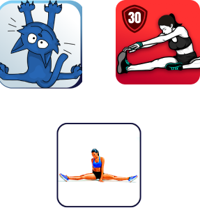
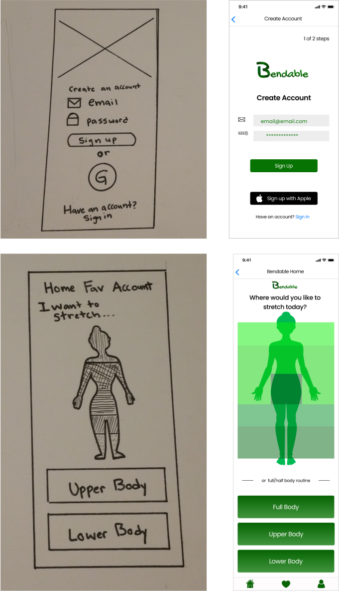

There’s a lot left to be desired in the apps made for stretching, they’re currently made for dancers or combine workouts with stretches. The goal of “Bendable” was to design an app where the user could easily choose a stretching routine based on areas of the body, have short routines that people really have time for and stretches the average person could do.
BENDABLE CASE STUDY
Problem -
Most people say that they would like to stretch more, but only 5% of survey users had ever used a stretching app. The apps currently on the market are made for people with advanced flexibility, lacks focus by combining stretches and workouts, or expects the user to commit a lot of time.
Solution -
100% of users wanted to improve their flexibility. The solution is to engage the 95% (that had never used a stretch app) by designing an app so easy to use, that when looking at an outline of a body, you can just point and tap where you want to stretch. Including multiple routines per body region and short routines that people have time for.
Competitive Analysis
Three highly rated stretching apps were compared: “Stretching Exercise App”, “Splits in 30 days”, and “StretchIt”. All three took a very different approach. Combined strengths of these apps include teaching the stretch with thorough instruction, strong social media pages, challenging stretches and focusing on one goal. Weaknesses include: combining workouts with stretches, a lack of options, unrealistic goals and stretches too difficult for the average person.

User Survey
A user survey was created and 100% of those surveyed wanted to stretch more and improve their flexibility. 95% had never used a stretching app, but everyone would consider trying one.
- Improve flexibility (100%)
- They sit all day (75%)
- Relieve pain (65%)
- Improve at sport (65%)
Reasons to stretch more:
- Choose by area of body
- Photos/graphics of stretch
- Videos of stretch
- Built-in timers
- Routines last about 5 min
Desired Features:
User Personas
User personas were created for the target audience: people who want to stretch, but don’t have a lot of time and aren’t sure what stretches are best. The personas were of a mom with grown kids who need to stretch for health reasons, a triathlon who wants to stretch after workouts to reduce soreness and a casual gym user who wants to learn a few new stretches. All the personas wanted to increase their flexibility, but at the moment found it difficult for a variety of reasons.

User Stories and User Flows
When writing the user stories, it became apparent that the high priority actions were: to quickly find a stretch by body region/part, pictures/video/gif, written instructions, multiple routines per target area, a timer so you know how long to stretch, and to be able to edit that timer.
User flows were then created for those priorities and other MVP needs like new user-flows, saving favorite routines and creating an account.

Wirefreames and Mockups
Wireframes were sketched out based on those flows. One change was removing the option to flip the body diagram from front to back. That was removed and the regions edited because there’s plenty of stretches that work the front and back of the body at once.
The dashboard was updated with color strips over the body that are buttons. This made the design more unique looking and easier to "point and click” at what you need. I also played around with color, adding some linear greens to add more style to the mockups.
Branding
The name was chosen when playing with word associations to “flexible”. Also, most stretches have you bend your body in different ways.

The colors are green and white, green to represent growth because as users become more flexible with the app they feel as if they are lengthening and growing in new directions. It’s also green to represent the balancing and harmonizing effect that stretching can have on your body and mind if you take the time to focus on it. The fonts used was Poppins because it’s easy to read, playful, and modern.
The “Bendable” logo is inspired by jungle vines wrapping, reaching out and bending across trees. Its logo is a “B” that bends to create its shape.
Clickable Prototype
The mockups were put together into a prototype using inVision.
User testing
The prototype was tested with 3 users and the testing went very well. Everyone was able to quickly enlarge the photos, mute, add favorites, play, pause, add time, and create an account. A couple of users experienced confusion with the “walk thru” screens for new users. One user had issues with a start button that was at the bottom of the card.
Preference Testing
Preference tests were done on any edits to the design. 71% preferred the timer controls that expanded on the whole screen. Another test compared the old start button with a new one and 53% preferred the original design. So it was changed so that the whole card could be a button to start the stretches.
71% also preferred to know how to edit with the words “Edit” next to a stopwatch icon over the option of a plus and minus sign icon.

Conclusion
The problem was solved by creating an app that appealed to everyone and didn't require you to know the anatomical names of the area you want to stretch. This was done with a intuitive dashboard screen with a "point and click" ease of use and basic stretching routines. Iterative work on the timer controls and "walk thru" screens improved the design and made it more user centric.
Some doubts when going into the project came when doing a competitive analysis and the first app that was critiqued was very impressive. Almost derailing the project. However, a closer look revealed that it lacked options and it combined workouts with stretches. Bendable was a great lesson on looking thoroughly before thinking something is perfect or can’t be improved.